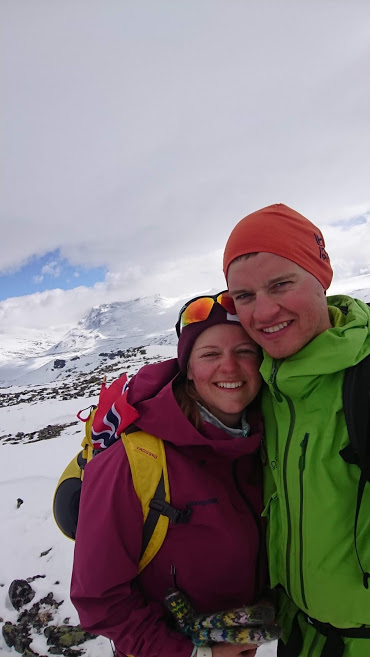

Mitt navn er Runar og jeg studerer for tiden grunnskolelærer i Trondheim. Uten å hevde jeg er veldig aktiv, liker jeg å være i aktivitet, oftest i form av turer i marka. Her gjelder det både korte dagsturer, og noen lengre turer med overnatting. De fleste turene har veldig lav terskel. Noen av de lengre turene krever riktignok planlegging, noe denne siden skal hjelpe meg med. Hensikten med denne siden er å samle alle ressursene jeg bruker ved planlegging av turer på en plass, samtidig som jeg lærer meg å kode. På denne siden har jeg derfor en oversikt over interessante fjellområder med webkamera og værvarsel. I tillegg har jeg samlet ulike ressurser jeg bruker i planleggingen som kartverktøyer og skredvarsel. Jeg har også en intensjon om å loggføre de ulike turene jeg har vært på, for min egen motivasjon og læring.
